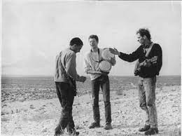
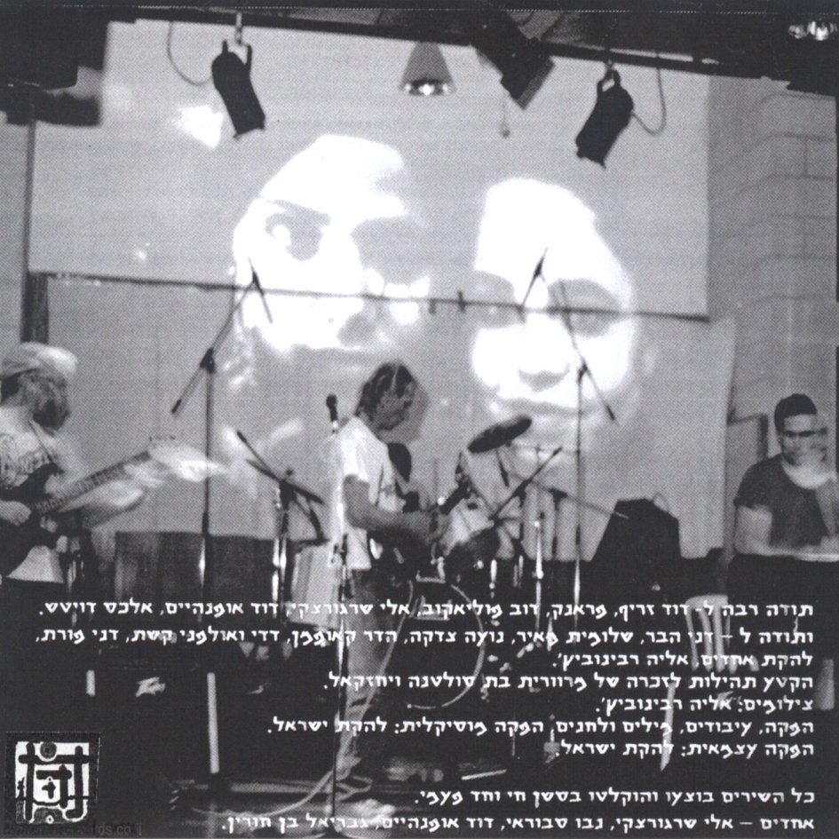

ישראל
אדם/קבוצה

ישראל היא להקת רוק אלטרנטיבי ישראלית שפעלה בין 1988-2010. הלהקה הוקמה ב־1988 ע"י גבריאל בן־חורין ונבו סבוראי, שהיה ממקימי להקת מע"צ, לאחר שפרש ממנה. בן-חורין התחיל לעבוד בניהול תאטרון פרגוד ובתקופת עבודתו שם החלו להופיע במקום להקות רוק, ביניהן ישראל, נושאי המגבעת ו־3ח.
הופעתם הראשונה נערכה בפרגוד בפברואר 1988. הם בעלי השקפה אידיאולוגית רדיקלית ובזמן הופעות חילקו מנשר תחת השם "מגילת העצמאות של עם ישראל" בו ביטאו את השקפתם על משמעות השם ישראל, תקומת האדם ורוח העם השואפת לקיום ללא גבולות דתיים, פוליטיים, גזעניים, צורניים ושרירותיים.
האלבום הראשון "יהוה" שהופק עצמאית ויצא כתקליט ויניל, הוקלט בתחילת 1989 ברובו באולפני קשת בירושלים (למעט המילה "יהוה" שטכנאי ההקלטות סרב להקליט). השירים עובדו ובוצעו בהקלטה חיה ובהשתתפות נגנים נוספים: חברי להקת נושאי המגבעת אלון כהן (תופים), תמיר אלברט (בס) ומלבדם שלומית מאיר (בס), וילי בלוך (גיטרה), דודיק אופנהיים מ־3ח (תופים), זיו לואיס (קלידים), אילנה צברי (שירה, בס), דני יצחקי, עופר הררי, רוני פינדל (כלי הקשה), מלכיאל גרוסמן (סקראצ'ינג). האלבום הופץ ב־100 עותקים שעטיפתם הוכנה ידנית. ב־2001 יצא כדיסק בהוצאת הלייבל פאקט וכיום זמין להודה חינם באתר Bandcamp.
הלהקה המשיכה להוציא אלבומים בערך כל שנתיים בשיתוף מוזיקאים שונים בהוצאה שהקימו "מ.ר.י מקום רוחני ישראלי" במקביל לעיסוקים נוספים. המוטיבים המרכזיים ביצירה הם "ישראל" ו"יהוה" שלטענת בן־חורין החזרה על מילה זו נועדה לנפץ טאבו יהודי. הופעות רבות של חברי הלהקה ועם אמנים אחרים נערכו ברוזה.

הלהקה על עטיפת האלבום "לאו 2"
קליפ לשיר "מהפכה במחשבה" מהאלבום "יהוה"